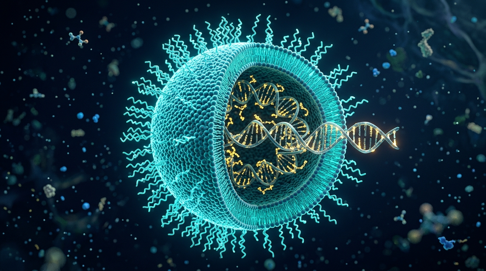

Moderna, Inc.: The mRNA Platform Revolution
A Strategic Case Study on Molecular Innovation, Clinical Translation, Nanotechnology Delivery, and Market Impact
- Core Thesis: Decoupled therapeutic drug discovery from classical organic chemistry. By using synthetic messenger RNA, the human cell's ribosome becomes the bioreactor.
- Nanotechnology Delivery: Overcame severe in vivo enzymatic degradation via specialized 4-component Lipid Nanoparticles (LNPs).
- Commercial Validation: Spikevax (COVID-19) validated platform speed at planetary scale; mRESVIA (RSV, approved May 2024) proved multi-pathogen commercial viability.
- Oncology Frontier: Pioneering Individualized Neoantigen Therapies (INT, mRNA-4157 / V940) with Merck in Phase 3 melanoma and lung cancer.

Executive Summary: The "Biotech as Software" Vision
How Moderna departed from traditional empirical biopharma to build a reusable, digital biological operating system.
- Executive Leadership: Stéphane Bancel joined in 2011 from bioMérieux, instilling a ruthless, tech-like operational velocity and high capital intensity.
- Information Molecule Paradigm: In traditional pharma, discovering Drug B does not make discovering Drug C any easier. In Moderna's model, mRNA is simply a string of code (A, C, G, U); modifying the code swaps the drug.
- Pre-Commercial Strategic Alliances: Secured non-dilutive R&D contracts with AstraZeneca (cardiovascular), Merck (cancer), Vertex (cystic fibrosis), and DARPA.
- Shared Delivery Architecture: Once the 4-component LNP formulation is validated for safety and tolerability, dozens of distinct mRNAs use the identical vehicle.
- Compounding Analytical Assets: Regulatory dossiers, toxicology packages, and CMC release assays carry forward across therapeutic indications.
- Norwood Foundry: Integrated digital biomanufacturing facility in Massachusetts equipped with robotics and cloud-connected MES systems.
The Core Biotechnology Innovation: Synthetic mRNA Architecture
Overcoming decades-old immunogenic barriers to engineer stable, highly translatable genetic transcripts.
- The Biological Obstacle: Natural immune sensors (Toll-like Receptors TLR3, TLR7, TLR8 and cytosolic RIG-I) recognize exogenous single-stranded RNA as viral pathogen-associated molecular patterns (PAMPs), inducing cytotoxic interferon cascades and cell death.
- The Nobel Prize Breakthrough: 100% substitution of uridine with N1-methylpseudouridine (m1Ψ) completely evades endosomal and cytosolic pattern recognition receptors.
- Translational Gain: Eliminates PKR activation, allowing host ribosomes to translate transcripts unimpeded.
- Synthetic Cap 1: Incorporates enzymatically coupled m7GpppAm 5' cap analogs mimicking mammalian mature mRNA.
- Ribosomal Recruitment: Provides ultra-high affinity for eukaryotic translation initiation factor 4E (eIF4E).
- Immune Evasion: Prevents recognition by IFIT1 (interferon-induced protein that sequesters unmethylated viral Cap 0 transcripts).
- Algorithmic GC Enrichment: Replaces rare, low-abundance tRNA codons with synonymous, high-frequency human codons to accelerate ribosome traversal.
- Structure Elimination: Eliminates internal secondary hairpin loops and cryptic splice sites.
- Engineered 5' & 3' UTRs: Derived from exceptionally stable human globin mRNAs to dictate intracellular half-life.
- Calibrated Length: Standardized 100–120 adenine tail synthesized from linearized DNA template.
- Circularization: Binds Poly(A)-Binding Protein (PABP), bridging with eIF4G to circularize the transcript for continuous polysome recycling.
- Exonuclease Protection: Protects against rapid 3' to 5' deadenylation.
Overcoming the Delivery Barrier: 4-Component LNPs
Naked mRNA is degraded within seconds in serum; Lipid Nanoparticles provide protective encapsulation and cellular entry.
- Ionizable Cationic Lipid (SM-102, ~50 mol%): The crucial engine. Positively charged at acidic pH during microfluidic manufacturing to condense negatively charged mRNA; neutral at blood pH (7.4) to avoid systemic toxicity; re-protonates in acidic endosomes.
- PEGylated Lipid (PEG2000-DMG, ~1.5 mol%): Confers steric hydration barriers preventing particle aggregation in storage and regulating particle diameter.
- Cholesterol (~38.5 mol%): Fills interstitial bilayer gaps, stabilizing particle integrity and promoting cellular membrane fusion.
- Helper Phospholipid (DSPC, ~10 mol%): High-melting zwitterionic structural lipid creating a stable outer lamellar bilayer shell.
- ApoE Opsonization: Injected LNPs adsorb serum ApoE, triggering LDLR-mediated endocytosis into target cells.
- Proton Sponge Effect: Acidic endosomal environment (pH ~5.5) reprotonates SM-102 tertiary amines.
- Hexagonal Phase Transition: Cationic lipids bind host anionic endosomal phospholipids, disrupting the vesicle and releasing intact mRNA into the cytosol.
Spikevax (mRNA-1273): Planetary Validation at Scale
The COVID-19 vaccine transformed global public health and established proof-of-concept for the entire mRNA modality.
- Antigen Engineering: Encoded the full-length SARS-CoV-2 spike protein locked in its prefusion conformation via 2 consecutive proline substitutions (2P mutations, co-designed with NIH VRC).
- COVE Clinical Trial: 30,000-participant blinded, placebo-controlled trial executed under rigorous FDA/EMA standards, demonstrating profound cellular and humoral immune protection.
- Variant Adaptability: Demonstrated platform agility by updating from ancestral monovalent to bivalent (BA.1, BA.4/5) and seasonal monovalent (XBB.1.5, KP.2) strains in under 60 days.
- Demolished Timeline: Compressed the historic 10–15 year vaccine development timeline into 11 months without compromising statistical power.
- Regulatory Modernization: Established FDA Emergency Use Authorization (EUA) and standard Biologics License Application (BLA) precedents for mRNA technologies.
- De-risking the Modality: Proved to global regulators, healthcare providers, and the scientific community that synthetic mRNA is commercially viable, safe, and mass-manufacturable.
mRESVIA & The Next-Gen Respiratory Franchise
Proving the platform's multi-pathogen commercial viability with FDA approval in May 2024 and combination pipeline.
- Historic FDA Approval (May 31, 2024): Became the first mRNA vaccine approved for a disease other than COVID-19, indicated for RSV in adults aged 60+ (expanded to high-risk 18–59 in 2025).
- Prefusion F Glycoprotein: Encodes the Respiratory Syncytial Virus (RSV) fusion protein stabilized in prefusion conformation using identical LNP formulation chemistry.
- ConquerRSV Phase 3 Efficacy: 83.7% efficacy against RSV lower respiratory tract disease with 2+ symptoms; 82.8% against 3+ symptoms.
- Prefilled Syringe Formulation: The only RSV vaccine supplied in ready-to-use prefilled syringes, drastically simplifying clinical handling and eliminating reconstitution errors.
- The Market Problem: Patient "vaccine fatigue" and low compliance when receiving separate seasonal jabs for COVID-19, Influenza, and RSV.
- mRNA-1083 (COVID-19 + Influenza Combination): Successfully met all primary immunogenicity endpoints in pivotal Phase 3 trials in adults 50+.
- Superior Immunogenicity: Induced statistically significantly higher antibody responses than co-administered standard-dose and high-dose influenza vaccines and Spikevax.
- Modular Formulation Power: Blends multiple distinct mRNA transcripts inside a single LNP formulation without requiring formulation redesign or increased injection volume.
Individualized Neoantigen Therapy (INT): mRNA-4157 / V940
Pioneering bespoke cancer vaccines in collaboration with Merck & Co. tailored specifically to each patient's tumor genome.
- Step 1 — Biopsy & Whole Exome Sequencing: Surgical tumor resection and peripheral blood undergo Next-Gen Sequencing to identify patient-specific somatic mutations.
- Step 2 — AI Neoantigen Prediction: Machine-learning algorithm predicts HLA-binding affinity and T-cell immunogenicity, selecting up to 34 unique neoantigens per patient.
- Step 3 — Custom mRNA Synthesis: A single bespoke synthetic mRNA transcript encoding all 34 neoepitopes concatenated together is manufactured and encapsulated in LNPs in ~6 to 8 weeks.
- Clinical Synergy: Neoantigen vaccine primes and expands tumor-infiltrating CD8+ cytotoxic T cells; Keytruda (anti-PD-1) releases the immune checkpoint brake.
- 44% Reduction in Recurrence or Death: INT + Keytruda demonstrated hazard ratio of 0.561 vs Keytruda monotherapy in resected stage III/IV high-risk melanoma.
- 65% Reduction in Distant Metastasis: Durable immune memory prevented systemic metastasis.
- Phase 3 Expansion: Currently conducting Phase 3 trials in adjuvant melanoma, non-small cell lung cancer (NSCLC), and cutaneous squamous cell carcinoma.
Agile Biomanufacturing: The Cell-Free Foundry Advantage
Contrasting classical mammalian bioreactor processes with Moderna's automated digital mRNA synthesis.
| Manufacturing Dimension | Classical Biologics (mAbs, Recombinant Proteins) | Moderna Cell-Free mRNA Platform |
|---|---|---|
| Biological Host | Live mammalian cell cultures (CHO cells, yeast) in 10,000L tanks | Cell-free enzymatic In Vitro Transcription (IVT) |
| Batch Lead Time | 6 to 9 months per production campaign | 4 to 6 weeks from digital sequence to released vial |
| Process Scalability | Bespoke scaling, prone to biological contamination and batch failure | Microfluidic impingement mixing; modular continuous skids |
| Facility Flexibility | Dedicated suites; extensive shutdown for line re-validation | Universal equipment handles vaccines, oncology, or rare disease |
- Robotics & Cloud MES: Fully digitized Manufacturing Execution System tracks every liquid transfer and microfluidic mixing parameter with real-time analytics.
- Tangential Flow Filtration (TFF): Proprietary purification removes double-stranded RNA (dsRNA) transcriptional side-products that trigger unwanted innate toxicity.
- Distributed Manufacturing Hubs: Established modular biomanufacturing facilities in the United States, United Kingdom, Canada, and Australia.
- 100-Day Pandemic Mission: Geographically distributed infrastructure capable of delivering localized variant-matched vaccines within 100 days of viral sequencing.
Key Scientific, Biological & Delivery Challenges
Critical bottlenecks in biodistribution, repeat dosing tolerability, thermal stability, and transient kinetics.
- Liver Clearance: Systemically administered standard LNPs adsorb ApoE from blood and accumulate predominantly in liver hepatocytes (>80% biodistribution).
- Targeting Limitations: Inefficient at reaching extra-hepatic tissues such as the lungs, bone marrow stem cells, central nervous system, and cardiac muscle.
- Next-Gen Frontier: Developing Selective Organ Targeting (SORT) lipids and antibody-conjugated LNPs to redirect tropism.
- Short Half-Life: Unlike DNA gene therapies, mRNA is degraded by host cellular enzymes within 24 to 72 hours.
- Chronic Disease Hurdle: Ideal for vaccines and temporary gene editing, but metabolic enzyme replacement (propionic acidemia) demands lifelong, repeated bi-weekly intravenous infusions.
- Circular RNA (circRNA): Investigating closed-loop RNA lacking 5'/3' ends to resist exonuclease degradation and extend half-life.
- Systemic Inflammation: High systemic doses trigger transient inflammatory cytokines (fever, chills, myalgia, fatigue).
- Dose Ceiling: Constrains the maximum tolerable dose for systemic therapeutic protein replacement applications.
- Lipid Metabolism: Developing next-generation biodegradable ionizable lipids with accelerated hepatic clearance.
- Accelerated Blood Clearance (ABC): Repeated administration of PEGylated LNPs can induce anti-PEG antibodies.
- Efficacy Loss & Hypersensitivity: Anti-PEG IgM can trigger complement activation-related pseudoallergy (CARPA) and rapid clearance of subsequent doses.
- Alternative Coatings: Formulating with non-PEG hydrophilic polymers and polysarcosine lipids.
Intellectual Property Warfare & Regulatory Complexity
Navigating high-stakes patent battles, government disputes, and pioneering novel regulatory approval standards.
- Arbutus / Genevant $2.25B Landmark Settlement (March 2026): Resolved years-long multi-jurisdictional litigation concerning foundational patents on 4-component LNP formulations. Moderna agreed to an upfront payment of $950M and up to $1.3B contingent, eliminating massive structural legal risk.
- Moderna vs. Pfizer & BioNTech Litigation: Multi-country patent lawsuits alleging Pfizer/BioNTech's Comirnaty infringed Moderna's patents on modified nucleoside chemistry and full-length spike protein design.
- US NIH Inventorship Dispute: Public friction over whether federal scientists at the NIH Vaccine Research Center should be credited as co-inventors on the core Spikevax sequence patent.
- Strain-Change Accelerated Frameworks: Worked with the FDA and EMA to establish a seasonal strain update pathway modeled after influenza, allowing rapid variant updates without repeating full 30,000-patient efficacy trials.
- Individualized Medicine Review: Breaking new ground with regulators for INT (mRNA-4157), where each patient's drug product possesses a completely unique chemical nucleotide sequence.
- Generic & Biosimilar Moat: The high technical barrier of microfluidic LNP manufacturing and proprietary lipid chemistry creates a formidable regulatory moat against rapid biosimilar entry.
Market Impact: Revenue Transformation & Platform Economics
Managing the post-pandemic revenue normalization while harnessing software-like platform economics.
- Unprecedented Scaling: Grew from $0 in commercial product sales pre-2020 to $18.5B in 2021 and $19.3B in 2022, achieving net profit margins exceeding 60%.
- Post-Pandemic Adjustment: Navigated a steep revenue contraction as pandemic emergency demand waned ($6.8B in 2023; stabilizing around $3B–$4B in 2024–2025).
- Strategic Capital Deployment: Reinvested pandemic windfall into an aggressive $4B+ annual R&D engine, funding 45+ clinical trials across oncology, latent viruses, and rare diseases.
- Path to Long-Term Breakeven: Growth driven by mRESVIA launch, combination seasonal vaccines (mRNA-1083), and commercialization of individualized cancer vaccines.
- Traditional Pharma Diseconomies: Each traditional small molecule or antibody requires customized synthesis, bespoke assays, unique bioreactors, and distinct toxicology packages ($1.5B+ per NME).
- Moderna's Shared Fixed Capital: Upfront billions spent perfecting the LNP delivery vehicle, lipid synthesis, and the Norwood automated foundry amortize across every pipeline drug.
- Low Marginal Cost per Asset: Adding program #45 simply requires modifying the digital nucleotide sequence in a computer file.
- Higher Probability of Success (PTRS): Clinical validation of the LNP carrier systematically de-risks delivery for subsequent programs.
Conclusion: Strategic Takeaways for the Biotech Industry
Key lessons from Moderna's journey from a venture-backed concept to a cornerstone of 21st-century medicine.
- Naked biological payload is therapeutically useless without an engineered delivery vehicle.
- Moderna's multi-billion-dollar investments in ionizable lipid formulation (SM-102) and microfluidics were the true enabler of clinical success.
- Next-generation biopharma value will accrue to firms that solve extra-hepatic tissue targeting.
- Modular, cell-free platforms radically outperform bespoke single-asset pipelines in speed and capital efficiency.
- Compressing the discovery-to-clinic timeline from decades to weeks provides unmatched strategic resilience during health crises.
- Platform economics decouple pipeline scalability from linear headcount and facility growth.
- Moderna succeeded by operating at the multidisciplinary nexus of molecular genetics, AI computational biology, nanotechnology, and robotic automation.
- Proved that biology can be engineered with the rapid, iterative feedback loops of digital software.
- mRNA is now an enduring, permanent third pillar of medicine alongside small molecules and biologics.
Final Verdict: Moderna demonstrated that treating biotechnology as programmable software is no longer science fiction—it is a proven, industrial reality that will reshape medicine for generations.